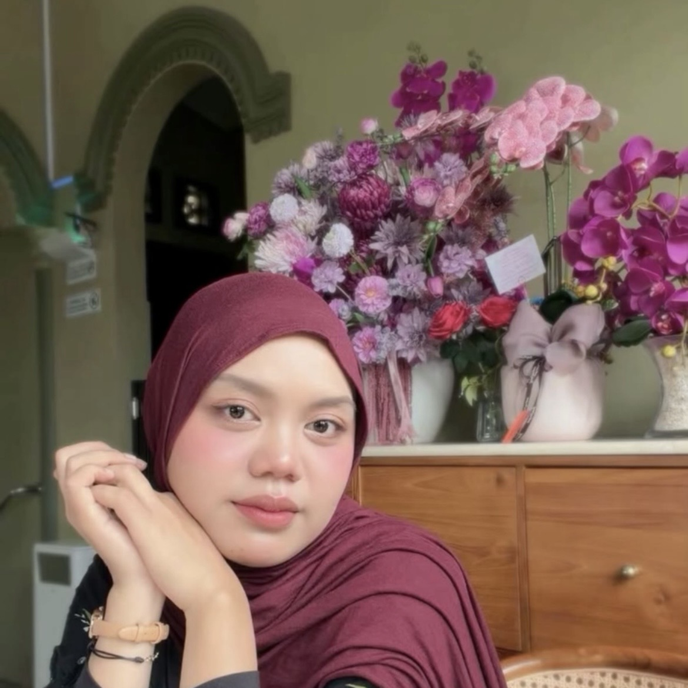
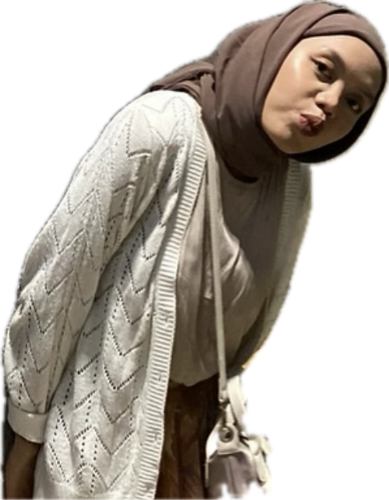

Happy
birthday,
Lisa!✳
LISA FADHILLAH PUTRI
Selamat naik level! Semoga hidup makin manis,
drama makin tipis, dan saldo nggak ikut menipis.
100% doa baik. 0% undangan rapat.

BAHAGIA
DISETUJUI ✓

usia nambah,gemesnya tetap.
Dear Lisa,
Hari ini boleh jadi
pusat perhatian.
Selamat ulang tahun, Lis! 🎂 Selamat berhasil mengelilingi matahari satu putaran lagi. Lumayan, perjalanan jauh tanpa harus bayar bensin.
Semoga di umur yang baru, lo selalu dikasih kesehatan, hati yang tenang, dan banyak alasan buat ketawa. Semoga hal-hal yang lagi lo usahain pelan-pelan nemu jalannya, dan doa yang masih antre dapet giliran terbaiknya.
Kalau ada hari yang berat, istirahat dulu. Lo manusia, bukan rice cooker yang harus terus-terusan mode keep warm.
Tetap jadi Lisa yang punya cara sendiri buat bersinar. Semoga tahun ini lebih ramah, lebih seru, dan penuh kabar baik. Sama satu lagi: semoga kalau beli gorengan, bonusnya dua.
orangnya agak
bercanda. ↗
Lisa, in her
main character era.
Empat foto. Satu pemeran utama.
Budget admin: niat dan doa.
Psst… fotonya bisa diklik. Ada komentar admin.
Satu klik,
satu doa baik ✷
Silakan ambil. Stok doanya nggak pakai kuota.
Semoga bahagia lo nggak cuma buat postingan,
tapi beneran kerasa sampai ke hati.
Make a wish, Lis.
Pikirin satu harapan. Terus tiup lilinnya.
Tenang, cukup klik. Layar lo nggak perlu disembur.
Satu lilin, harapannya boleh banyak.